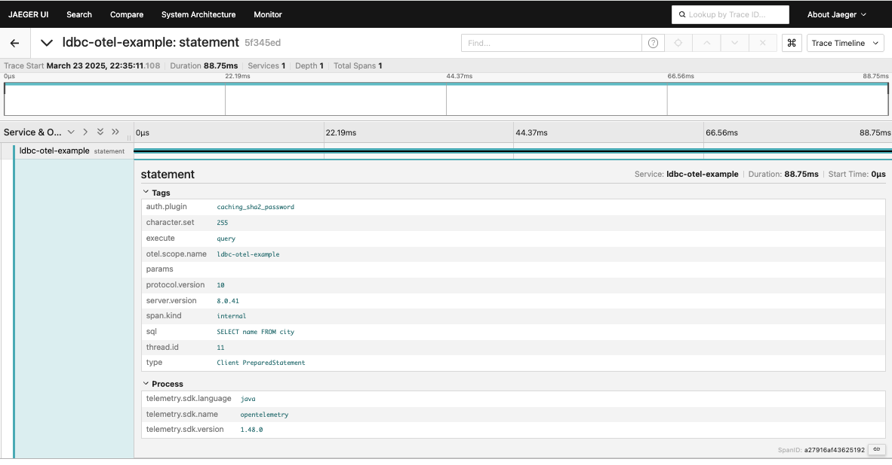
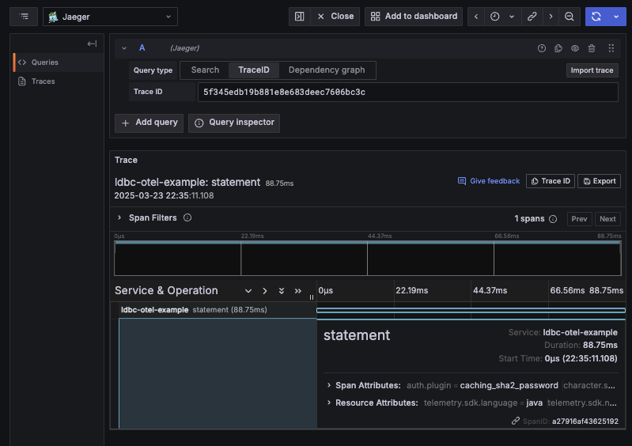

Observability with OpenTelemetry
This page explains how to achieve observability through database query tracing, metrics collection, and logging by integrating ldbc with OpenTelemetry.
What is OpenTelemetry?
OpenTelemetry is an open-source framework for implementing application observability. It provides features such as distributed tracing, metrics collection, and logging, enabling an integrated approach to monitoring and analyzing application performance and behavior.
By integrating with OpenTelemetry, ldbc can benefit from:
- Tracking database query execution time and processing
- Measuring query performance
- Error detection and diagnosis
- System-wide visualization and monitoring
Required Dependencies
To use OpenTelemetry with ldbc, you need to add the following dependencies to your project:
libraryDependencies ++= Seq(
// otel4s library (Scala wrapper for OpenTelemetry)
"org.typelevel" %% "otel4s-oteljava" % "0.11.2",
// OpenTelemetry exporter (for data transmission)
"io.opentelemetry" % "opentelemetry-exporter-otlp" % "1.48.0" % Runtime,
// Auto-configuration functionality (configuration via environment variables and system properties)
"io.opentelemetry" % "opentelemetry-sdk-extension-autoconfigure" % "1.48.0" % Runtime,
)OpenTelemetry Configuration in ldbc
ldbc provides a setTracer method in ConnectionProvider where you can configure the OpenTelemetry Tracer.
Basic configuration steps are as follows:
- Initialize OpenTelemetry
- Obtain a TracerProvider
- Configure it in the ConnectionProvider
Here's a basic configuration example:
import cats.effect.*
import io.opentelemetry.api.GlobalOpenTelemetry
import org.typelevel.otel4s.oteljava.OtelJava
import ldbc.connector.*
import ldbc.dsl.*
// Service name (trace identifier)
val serviceName = "my-ldbc-app"
// Resource configuration
val resource: Resource[IO, Connection[IO]] =
for
// Create otel4s instance from GlobalOpenTelemetry
otel <- Resource
.eval(IO.delay(GlobalOpenTelemetry.get))
.evalMap(OtelJava.forAsync[IO])
// Get TracerProvider with service name
tracer <- Resource.eval(otel.tracerProvider.get(serviceName))
// Configure database connection and set TracerProvider
connection <- ConnectionProvider
.default[IO]("localhost", 3306, "user", "password", "database")
.setSSL(SSL.Trusted)
.setTracer(tracer) // Set OpenTelemetry Tracer
.createConnection()
yield connection
// Execute query using the resource
val program = resource.use { conn =>
sql"SELECT * FROM users".query[String].to[List].readOnly(conn)
}Configuration via Environment Variables
OpenTelemetry can be configured using system properties or environment variables. You can customize OpenTelemetry behavior by setting the following system properties when starting your application:
java -Dotel.java.global-autoconfigure.enabled=true \
-Dotel.service.name=ldbc-app \
-Dotel.traces.exporter=otlp \
-Dotel.metrics.exporter=none \
-Dotel.exporter.otlp.endpoint=http://localhost:4317 \
-jar your-application.jarFor SBT execution, you can configure it as follows:
javaOptions ++= Seq(
"-Dotel.java.global-autoconfigure.enabled=true",
"-Dotel.service.name=ldbc-app",
"-Dotel.traces.exporter=otlp",
"-Dotel.metrics.exporter=none"
)Practical Example: ldbc Application with OpenTelemetry
Here's a complete example of setting up an observability environment using Docker Compose with Jaeger and Prometheus, and sending trace data from an ldbc application.
Project Structure
Assume the following project structure:
otel-example/
├── src/
│ └── main/
│ └── scala/
│ └── Main.scala
├── database/
│ └── xxx.sql
├── dependencies/
│ ├── jaeger/
│ │ └── jaeger-ui.json
│ ├── prometheus/
│ │ └── prometheus.yml
│ └── grafana/
│ └── datasources.yaml
└── docker-compose.yamlMain.scala
Here's the main application code:
import cats.effect.*
import io.opentelemetry.api.GlobalOpenTelemetry
import org.typelevel.otel4s.oteljava.OtelJava
import ldbc.connector.*
import ldbc.dsl.*
object Main extends IOApp.Simple:
private val serviceName = "ldbc-otel-example"
private def resource: Resource[IO, Connection[IO]] =
for
otel <- Resource
.eval(IO.delay(GlobalOpenTelemetry.get))
.evalMap(OtelJava.forAsync[IO])
tracer <- Resource.eval(otel.tracerProvider.get(serviceName))
connection <- ConnectionProvider
.default[IO]("127.0.0.1", 13307, "ldbc", "password", "world")
.setSSL(SSL.Trusted)
.setTracer(tracer)
.createConnection()
yield connection
override def run: IO[Unit] =
resource.use { conn =>
sql"SELECT name FROM city".query[String].to[List].readOnly(conn).flatMap { cities =>
IO.println(cities)
}
}docker-compose.yaml
Use the following Docker Compose configuration for the observability environment:
services:
database:
image: mysql:8.0.41
container_name: ldbc-otel-example
ports:
- 13307:3306
networks:
- static-network
volumes:
- ./database:/docker-entrypoint-initdb.d
- ./database/my.cnf:/etc/database/conf.d/my.cn
environment:
MYSQL_USER: 'ldbc'
MYSQL_PASSWORD: 'password'
MYSQL_ROOT_PASSWORD: 'root'
TZ: 'Asia/Tokyo'
healthcheck:
test: [ "CMD", "mysqladmin", "ping", "-h", "localhost" ]
timeout: 20s
retries: 10
prometheus:
image: prom/prometheus:latest
volumes:
- "./dependencies/prometheus/prometheus.yml:/etc/prometheus/prometheus.yml"
ports:
- "9090:9090"
networks:
- static-network
jaeger:
image: jaegertracing/all-in-one:latest
volumes:
- "./dependencies/jaeger/jaeger-ui.json:/etc/jaeger/jaeger-ui.json"
command: --query.ui-config /etc/jaeger/jaeger-ui.json
environment:
- METRICS_STORAGE_TYPE=prometheus
- PROMETHEUS_SERVER_URL=http://prometheus:9090
- COLLECTOR_OTLP_ENABLED=true
ports:
- "16685:16685" # GRPC
- "16686:16686" # UI
- "4317:4317" # OTLP gRPC receiver
- "4318:4318" # OTLP http receiver
networks:
- static-network
grafana:
image: grafana/grafana-oss
restart: unless-stopped
volumes:
- "./dependencies/grafana/datasources.yaml:/etc/grafana/provisioning/datasources/datasources.yaml"
ports:
- "3000:3000"
networks:
- static-network
depends_on:
jaeger:
condition: service_started
networks:
static-network:
name: static-networkExecution Steps
- First, start the observability environment with Docker Compose:
cd otel-example
docker-compose up -d- Then, run the application with the following Java options:
sbt -Dotel.java.global-autoconfigure.enabled=true \
-Dotel.service.name=ldbc-otel-example \
-Dotel.metrics.exporter=none \
run- After running the application, access the Jaeger UI (http://localhost:16686) to view traces:

You can also check traces in the Grafana UI (http://localhost:3000):

Trace Details
ldbc's OpenTelemetry integration records the following information in traces:
- Query execution time: Time taken for database queries
- SQL statements: Content of executed SQL queries
- Query parameters: Parameter values passed to queries (safely recorded)
- Connection information: Server and database name connection details
- Error information: Detailed information when errors occur
Adding Custom Spans
For more detailed tracking, you can add custom spans. Here's an example of wrapping query execution with a custom span:
resource.use { conn =>
tracer.span("custom-database-operation").use { span =>
// Add attributes to span
span.setAttribute("db.operation", "select-cities")
// Execute query
sql"SELECT name FROM city".query[String].to[List].readOnly(conn).flatMap { cities =>
// Add attributes about result data
span.setAttribute("result.count", cities.size)
IO.println(cities)
}
}
}Trace Customization Options
ldbc's OpenTelemetry integration allows for additional customization such as:
- Sampling rate configuration: Trace only a portion of queries instead of all
- Attribute filtering: Exclude sensitive information from traces
- Custom trace exporters: Send to tracing systems other than Jaeger
These settings can be configured through OpenTelemetry configuration files or system properties.
Summary
Combining ldbc with OpenTelemetry enables detailed visualization and monitoring of database operations. Using the methods introduced in this guide makes it easier to identify application performance issues, discover bottlenecks, and perform troubleshooting.
In production environments, you may need to adjust settings according to security requirements and environment specifics. We recommend referring to the official OpenTelemetry documentation to find the optimal configuration.